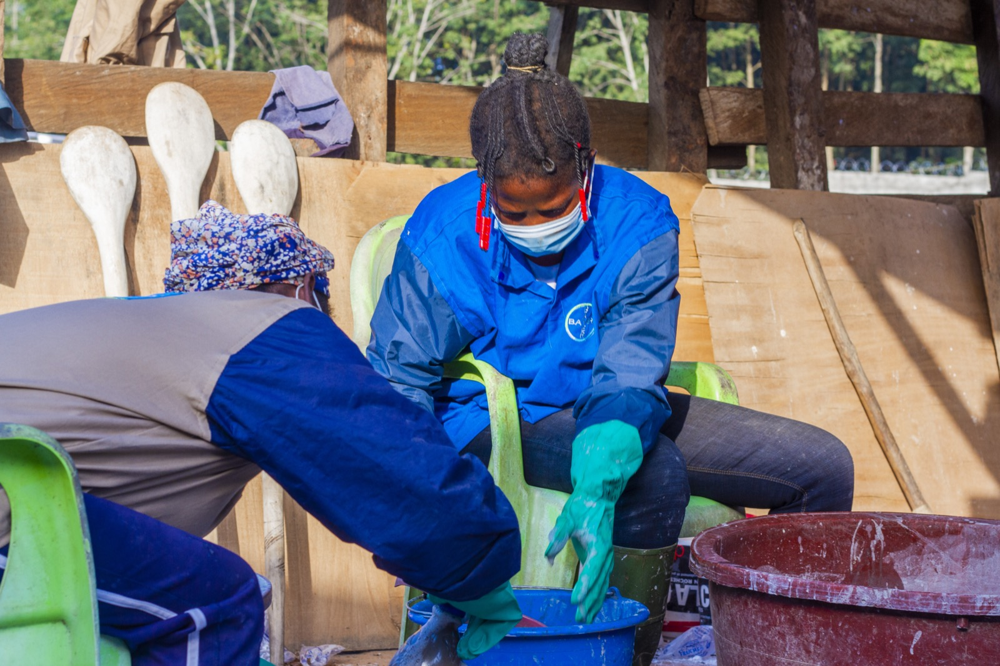
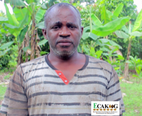
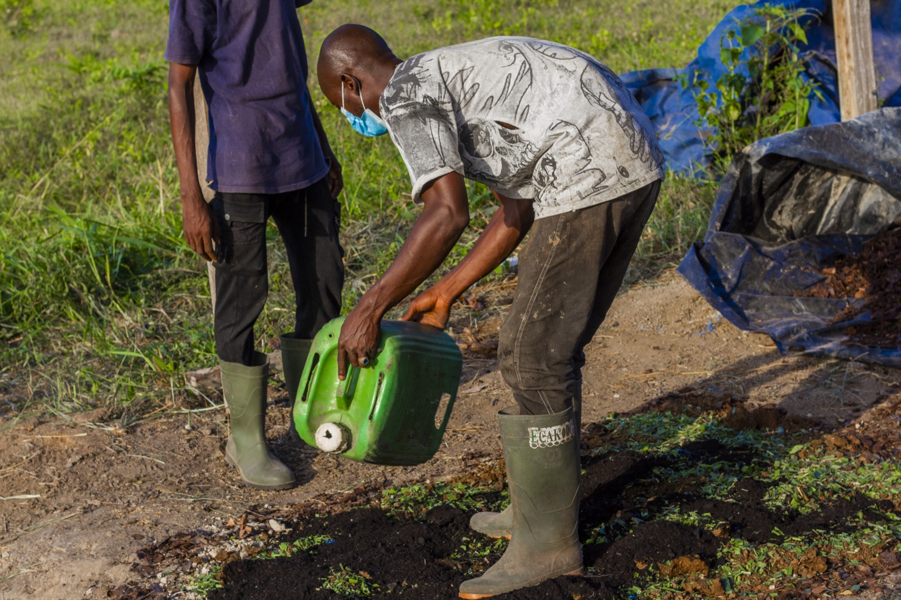

Fournir de l’engrais organiques et des biopesticides pour une production respectueuse de l’environnement
Certifiée cacao biologique selon les normes européenne EOS et américaine NOP, ECAKOOG compte à ce jour plus de 105 producteurs certifiés cacao biologique et 278 producteurs en conversion pour la transition vers la production du cacao biologique. ECAKOOG a une production estimée à plus de 125 tonnes de fèves certifiées biologiques, des chiffres qui ne cessent de croître au fil des campagnes.
Les producteurs certifiés cacao biologique voient la fertilité de leurs terres s’améliorer et bénéficient d’un accès facilité aux intrants biologiques. Pour soutenir la production de fèves de cacao certifiées biologiques et maîtriser toute la chaîne d’approvisionnement de ce programme, l’Entreprise Coopérative Agricole Koognagnan de Grogouya a pris les dispositions pour fournir ses producteurs du programme cacao biologique en intrants biologiques afin d’améliorer la fertilité des sols, le traitement des vergers et la qualité des fèves récoltées et ainsi obtenir un prix plus rémunérateur grâce aux débouchés sur le marché bio-équitable et les marchés de niche.
ECAKOOG, soutenu par le programme Équité, a pu mettre en place un ensemble d’éléments permettant de :
Nos Actions Clés
- Mise en place d'une bio-fabrique (2 hangars)
- Production et vente d'intrants bio à moindre coût
- Expérimentation du système agroécologique
- École de formation aux pratiques innovantes
Témoignage

Producteur
"Mon exploitation a complètement changé. Elle a été régénérée grâce aux bonnes pratiques agricoles et environnementales. Le rendement a augmenté, et j’ai de meilleurs prix. Cela nous a beaucoup aidés. Grâce à Ecakoog, j’ai retrouvé ma vie."
